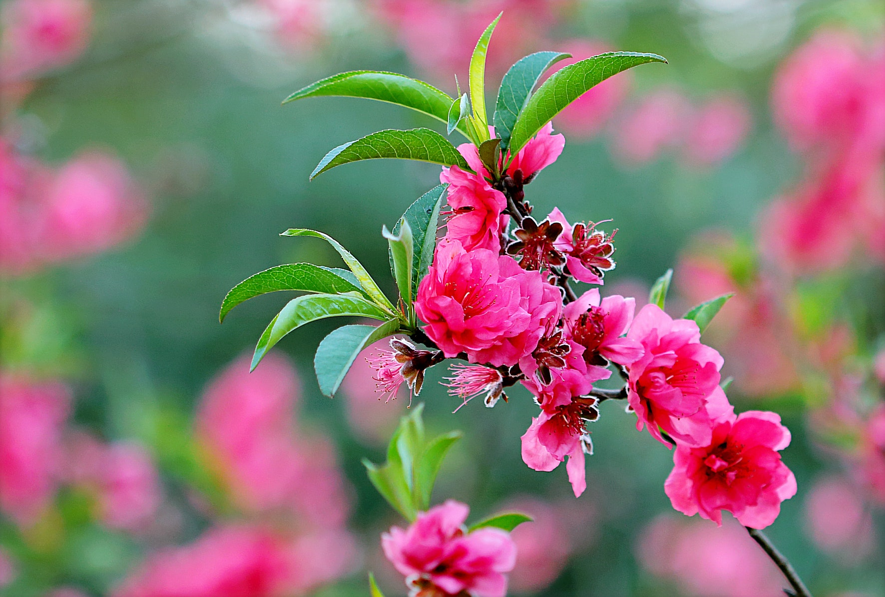

My mom loves gardening and these are pictures from her own garden. This is my mom favorite things to do.She love to spend time in garden.It is her happy place.

Rhododendrun flower is national flower of Nepal.We call it Lali Gurans in Nepal,these flowers are available on the hilly or mountain areas in our country Nepal.
Marigold flowers are called "Syapatri" flowers in Nepal. These are used in most of the celebration, rituals and other different purpose. These flowers are mainy used in one of the main festival in Nepal where sissters worship their brothers with this beautiful flowers.
From Tulip festivals in Oregan.